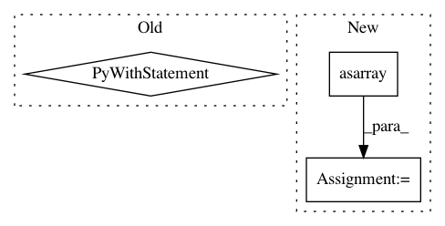

b95fcf7f52aca8ad0b1afb3cfc64c8eed534fafe,tests/keras/backend/backend_test.py,TestBackend,test_nn_operations,#TestBackend#,783
Before Change
// Test invalid use cases
for x, k in zip(x_list, [KTH, KTF]):
with pytest.raises(ValueError):
z = k.dropout(x, level=-0.5)
def test_in_top_k(self):
batch_size = 20
num_classes = 10
After Change
check_two_tensor_operation("categorical_crossentropy", (4, 2), (4, 2), [KTH, KTF], from_logits=True)
xval = np.asarray([[0.26157712, 0.0432167], [-0.43380741, 0.30559841],
[0.20225059, -0.38956559], [-0.13805378, 0.08506755]], dtype=np.float32)
yval = np.asarray([[0.46221867, 0.53778133], [0.51228984, 0.48771016],
[0.64916514, 0.35083486], [0.47028078, 0.52971922]], dtype=np.float32)
check_two_tensor_operation("categorical_crossentropy", xval, yval,
BACKENDS, cntk_two_dynamicity=True, from_logits=True)
check_two_tensor_operation("binary_crossentropy", (4, 2), (4, 2), BACKENDS, from_logits=False)
check_two_tensor_operation("categorical_crossentropy", (4, 2), (4, 2), BACKENDS, from_logits=False)
In pattern: SUPERPATTERN
Frequency: 3
Non-data size: 3
Instances
Project Name: keras-team/keras
Commit Name: b95fcf7f52aca8ad0b1afb3cfc64c8eed534fafe
Time: 2017-07-29
Author: me@taehoonlee.com
File Name: tests/keras/backend/backend_test.py
Class Name: TestBackend
Method Name: test_nn_operations
Project Name: statsmodels/statsmodels
Commit Name: 0d294ab613b7b6fff9bab00d2e8e94d531908d2e
Time: 2020-06-04
Author: samuel.scherrer@posteo.de
File Name: statsmodels/tsa/exponential_smoothing/ets.py
Class Name: ETSModel
Method Name: fit
Project Name: Theano/Theano
Commit Name: 8289fc6b5874208d2281841a43eb4c4ca1c3424c
Time: 2017-04-07
Author: tfjgeorge@gmail.com
File Name: theano/gpuarray/linalg.py
Class Name: GpuCholesky
Method Name: perform